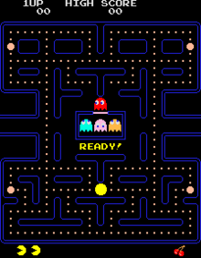

Pacman
Pac-Man,[a] originally called Puck Man in Japan, is a 1980 maze action video game developed and released by Namco for
arcades. In North America, the game was released by Midway Manufacturing as part of its licensing agreement with Namco
America.
Gameplay
Pac-Man is an action[8] maze chase video game; the player controls the eponymous character through an enclosed maze. The
objective of the game is to eat all of the dots placed in the maze while avoiding four colored ghosts—Blinky (red),
Pinky (pink), Inky (cyan), and Clyde (orange)—who pursue Pac-Man. When Pac-Man eats all of the dots, the player advances
to the next level. Levels are indicated by fruit icons at the bottom of the screen. In between levels are short
cutscenes featuring Pac-Man and Blinky in humorous, comical situations.

Development
After acquiring the struggling Japanese division of Atari in 1974, video game developer Namco began producing its own
video games in-house, as opposed to simply licensing them from other developers and distributing them in Japan.[11][12]
Company president Masaya Nakamura created a small video game development group within the company and ordered them to
study several NEC-produced microcomputers to potentially create new games with.
Release
Location testing for Puck Man began on May 22, 1980, in Shibuya, Tokyo, to a relatively positive fanfare from
players.[24] A private showing for the game was done in June, followed by a nationwide release in July.[12] Eyeing the
game's success in Japan, Namco initialized plans to bring the game to the international market, particularly the United
States.
Ports
Pac-Man was ported to a plethora of home video game systems and personal computers; the most infamous of these is the
1982 Atari 2600 conversion, designed by Tod Frye and published by Atari.[40] This version of the game was widely
criticized for its inaccurate portrayal of the arcade version and for its peculiar design choices, most notably the
flickering effect of the ghosts.